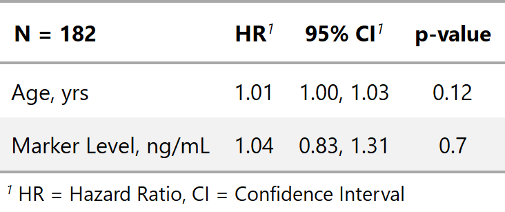
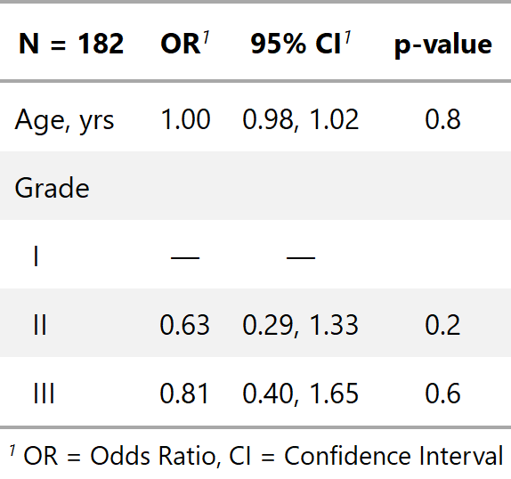
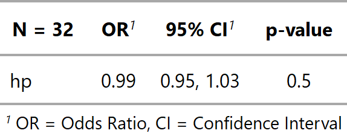

| tbl_regression {gtsummary} | R Documentation |
This function uses broom::tidy and broom.mixed::tidy to perform the initial model formatting. Review the tbl_regression vignette for detailed examples.
tbl_regression(x, label = NULL, exponentiate = FALSE, include = NULL, exclude = NULL, show_yesno = NULL, conf.level = 0.95, intercept = FALSE, estimate_fun = ifelse(exponentiate == TRUE, style_ratio, style_sigfig), pvalue_fun = style_pvalue)
x |
regression model object |
label |
list of variable labels to override default labels in the table
output, e.g. |
exponentiate |
logical indicating whether or not to exponentiate the
coefficient estimates. Default is |
include |
names of variables to include in output. |
exclude |
names of variables to exclude from output. |
show_yesno |
By default yes/no categorical variables are printed on a single row, when the 'No' category is the reference group. To print both levels in the output table, include the variable name in the show_yesno vector, e.g. 'show_yesno = c("var1", "var2")“ |
conf.level |
must be strictly greater than 0 and less than 1. Defaults to 0.95, which corresponds to a 95 percent confidence interval. |
intercept |
logical argument indicating whether to include the intercept
in the output. Default is |
estimate_fun |
function to round and format beta coefficient estimates. Default is style_sigfig when the coefficients are not transformed, and style_ratio when the coefficients have been exponentiated. |
pvalue_fun |
function to round and format p-values.
Default is |
The N reported in the tbl_regression() output is the number of observations
in the data frame model.frame(x). Depending on the model input, this N
may represent different quantities. In most cases, it is the total number of
observations in your model; however, the precise definition of an observation,
or unit of analysis, may differ across models. Here are some common examples.
Survival regression models including time dependent covariates.
Random- or mixed-effects regression models with clustered data.
GEE regression models with clustered data.
This list is not exhaustive, and care should be taken for each number reported.
Example 1

Example 2

Example 3

Daniel D. Sjoberg
Other tbl_regression tools: add_global_p.tbl_regression,
add_nevent.tbl_regression,
bold_italicize_labels_levels,
inline_text.tbl_regression,
sort_p.tbl_regression,
tab_style_bold_p.tbl_regression,
tbl_merge, tbl_stack
library(survival) tbl_regression_ex1 <- coxph(Surv(ttdeath, death) ~ age + marker, trial) %>% tbl_regression(exponentiate = TRUE) tbl_regression_ex2 <- glm(response ~ age + grade, trial, family = binomial(link = "logit")) %>% tbl_regression(exponentiate = TRUE) library(lme4) tbl_regression_ex3 <- glmer(am ~ hp + (1 | gear), mtcars, family = binomial) %>% tbl_regression(exponentiate = TRUE)